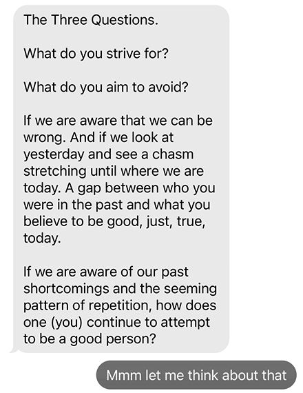

Zaid's three questions
November 12, 2023
–
My friend Zaid recently asked me three questions:

This came after a conversation about my hesitancy to write and share it publicly, so it’s only fitting I make this public on my website.
Here are my answers to you, Zaid ︎☺
What do I strive for?
I don’t know if I have any material aspirations – no dream job, dream house, or anything of the sort. I think that I’ve had a lot of ideas but funnily enough the older I get the less clear a lot of that becomes to me. What I do know drives and motivates me is:
One thing I found throughout the two-year-long bout of artistic burnout I had around 2017 was that I loved being able to be helpful to other artists. Acting as someone with whom my friends could ideate was a very cathartic experience for me in a time where I didn’t feel capable of putting pen to paper myself. And while I’ve gotten back into the rhythm of creating my own artwork, largely in private, the idea of being able to support others who have a greater drive than I currently do to share their creations with the world is a beautiful thing to me. When I say infrastructure, I don’t necessarily mean it in the traditional sense of the word (although I can imagine owning/co-owning/sharing physical infrastructure in an art gallery or community space or education/resource centre being cool), but more so as a metaphor to describe knowledge, approaches to practice, ideas; mental infrastructure, so to speak. To this end, creating a curriculum for a class would be a fun exercise. Similarly, being in a position to research and explore new fun and creative applications of technology in the arts is also an interesting idea to me.
From a community perspective I just love seeing people get together, even as someone who can have an admittedly short social battery life. Especially during COVID, this is easier to facilitate online, which is why I spent time working on things such as my fridge or the library. These kinds of projects resonate with me because they provide opportunity for little ephemeral water-cooler-level communication, but without the expectation that you are to buy something or be advertised to (this is why in the offline world I like libraries and parks – I think community is often best in spaces where participation in such a community isn’t muddied with financial barriers of access or advertisement). Sometimes community isn’t a grandiose thing, but being able to say ‘hi’ to new people.
I think the desire to be kind and empathetic speaks for itself. I think for so many people the world can be tough, shitty, no fun, and the last thing they need is one more person to be needlessly rude or intolerant to them. It also speaks to a belief in a social karma of sorts, treat others how you want to be treated, etc. Of course, I don’t want to be kind to the point of having no spine, and of course, I don’t have patience for people that are motivated in part or in full by their hatred of others, especially when that hate falls along the lines of discrimination on the basis of identity.
And to the point of making art for myself: simple as that. I love art, I love looking at art, I love helping make art in a group, on a team, and I love making art on my own, even if I only share it with a small group of people. Art has been a constant in my life since I was a kid, I’ve always liked creating, and whatever I end up doing and wherever I end up going I never want to stop that, nor do I want to box myself in to just a handful of mediums.
What do I aim to avoid?
This question stumped me the most. I think it calls for more reflection from me to really asses the ‘filters’, or lack thereof, I have controlling what I allow into my life.
The foremost thing I generally try to avoid is instability, without compromising opportunity for new experiences and the ability to be spontaneous. I’ve found over the years I’m a person who values stability a lot – there was a time where a younger Greg dreamed of a more nomadic lifestyle as a photographer (or something in that vein), but I’ve quickly learned over the last half decade that that is not a life that would make me happy (I know there’s some irony in me saying this shortly after uprooting my life and moving to a new continent, country and city, but I do feel a sense of stability in Lisbon, as I plan to be here for the foreseeable future).
One thing that’s been at the forefront of my brain the last two or so years is the desire to avoid commanding respect or praise by reifying or improving my position in any given hierarchy. I want to be liked and respected for who I am and how I treat others, and I think from a young age we are implicitly (sometimes explicitly) taught to associate the degree to which one must be respected with primarily their status, income, and/or the degree to which they have power or control over others. A lot of people hear the term “respect is earned not given” and it seems they feel as if it is earned through hard work that puts them in a position of authority where they can reasonably demand respect. But I disagree. I do not want to fall into the trap of believing that the amount of respect owed to me should be tied predominantly to my personal successes.
How do I continue to attempt to be a good person given the knowledge that one is always changing?
I think this is actually a really comforting fact – knowing that there is always more to learn and to become.
When I reflect back on the development of my belief systems, politics, and general approach to engaging people people and the world at large, I think an overwhelming majority of the opinions I’ve held that I’m now embarrassed to have held, or things I’ve done that I’m ashamed of, come down (largely) to a lack of perspective and knowledge on my part.
With this in mind, as I navigate through life day to day, I try to give the benefit of the doubt, try to listen to others and hear them out. I try to keep an openness to learn with me at all times, and I am mindful and attentive to the information and content I consume.
Above all of this, I just do my best to be nice and understanding to everyone, since I think that’s the least you can do ︎☺